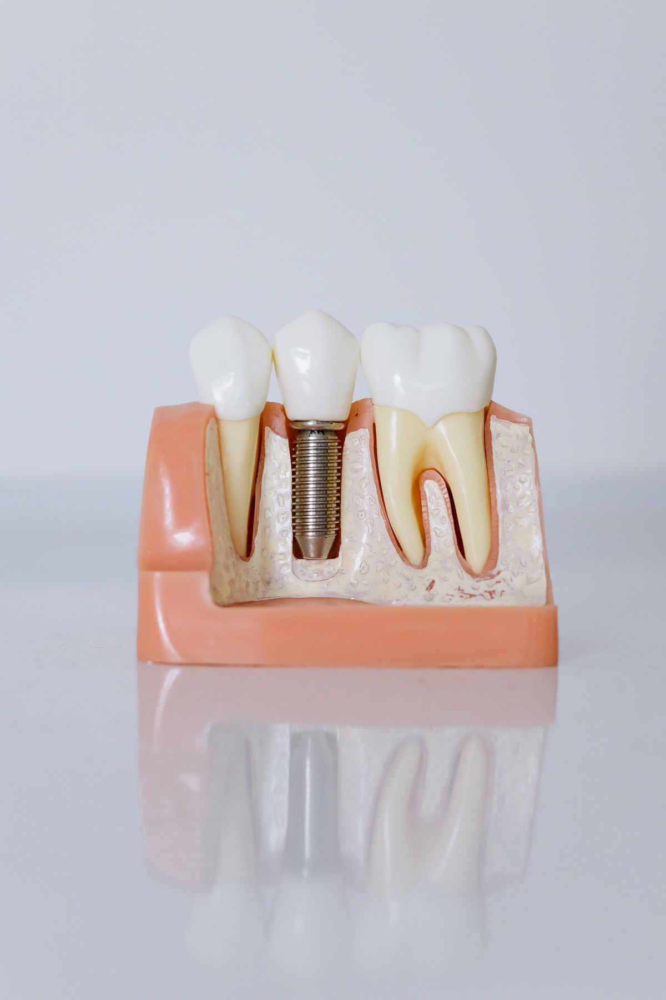
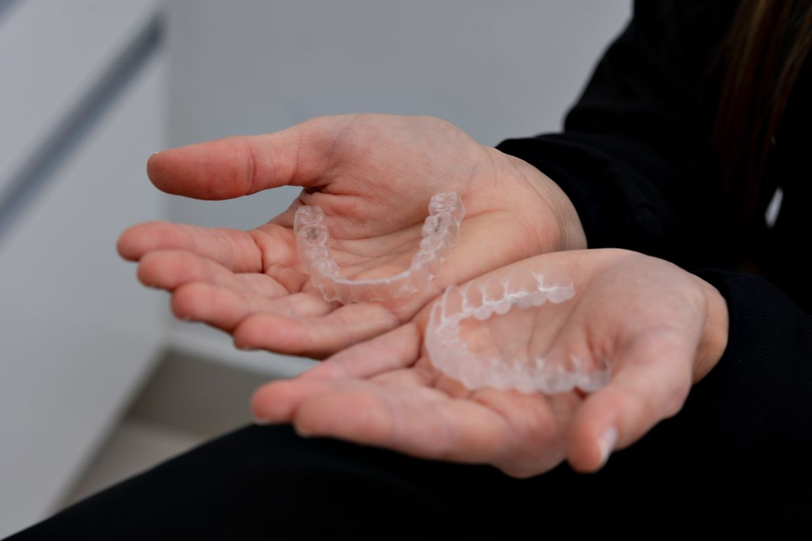
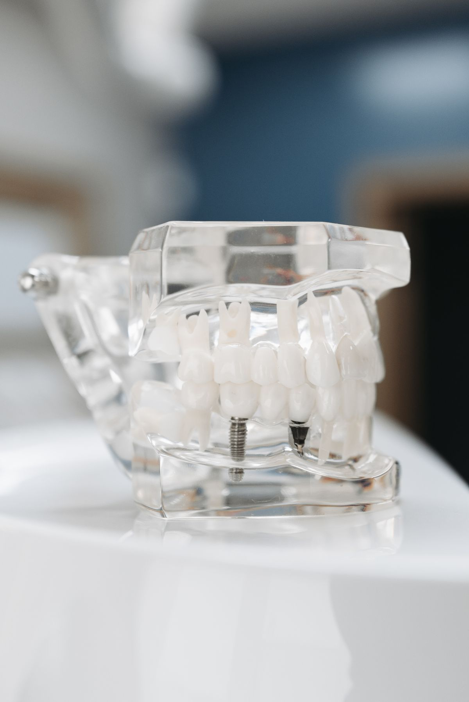
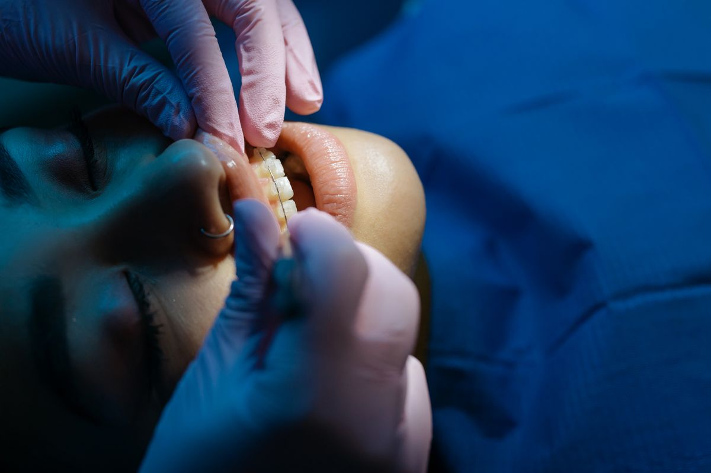

ایمپلنت دندان
جایگزینی دائمی دندانهای از دسترفته با پایه ایمپلنت و روکش، برای بازگشت عملکرد جویدن و ظاهر طبیعی لبخند.
مشاوره ایمپلنت ←در دندانپزشکی انسو، درمانهای تخصصی دهان و دندان — از ایمپلنت تا ارتودنسی و طراحی لبخند با لمینت و کامپوزیت — زیر نظر دکتر فرشاد صدر و در یک مرکز انجام میشود؛ بدون رفتوآمد بین چند مطب.

انسو یک مرکز چندتخصصی است؛ مهمترین درمانهای ترمیمی، جایگزینی و زیبایی دندان در همینجا انجام میشود.

جایگزینی دائمی دندانهای از دسترفته با پایه ایمپلنت و روکش، برای بازگشت عملکرد جویدن و ظاهر طبیعی لبخند.
مشاوره ایمپلنت ←
مرتبسازی دندانها و اصلاح ناهنجاریهای فک و بایت، برای کودکان، نوجوانان و بزرگسالان — با طرح درمان مرحلهبهمرحله.
مشاوره ارتودنسی ←
روکشهای نازک سرامیکی برای اصلاح فرم، رنگ و فاصله دندانهای جلو؛ مسیر اصلی طراحی یک لبخند یکدست و طبیعی.
مشاوره لمینت ←
اصلاح فرم و رنگ دندان با کامپوزیت، با انتخاب رنگ هماهنگ با دندانهای طبیعی و تراش حداقلی ساختار دندان.
مشاوره کامپوزیت ←
ایمپلنت، نزدیکترین جایگزین به دندان طبیعی است: پایهای که در استخوان فک قرار میگیرد و روکشی که مثل دندان خودتان کار میکند. در انسو، پیش از هر تصمیمی، وضعیت استخوان و لثه بررسی و کل مسیر درمان — از جراحی تا روکش نهایی — شفاف برایتان توضیح داده میشود.
وقتی ایمپلنت، ارتودنسی و درمانهای زیبایی در یک مرکز انجام شود، طرح درمان شما یکپارچه است: هر مرحله با مرحله بعد هماهنگ میشود و لازم نیست برای هر بخش، پروندهتان را به مطب تازهای ببرید.




از واتساپ نوبت میگیرید؛ در جلسه اول، وضعیت دندانها کامل معاینه و نیاز درمانیتان مشخص میشود.
مسیر درمان، تعداد جلسات و ترتیب مراحل — از ایمپلنت تا زیبایی — شفاف با شما مرور میشود.
درمان طبق همان طرح و در همان مرکز انجام میشود؛ بدون ارجاع و رفتوآمد اضافه.
پس از پایان درمان، جلسات کنترل و آموزش مراقبت خانگی، نتیجه را ماندگار میکند.
ایمپلنت برای بیشتر بزرگسالانی که یک یا چند دندان را از دست دادهاند و از سلامت عمومی و استخوان فک کافی برخوردارند، گزینه مناسبی است. مناسببودن قطعی آن فقط پس از معاینه و بررسی عکسهای تشخیصی مشخص میشود؛ در جلسه مشاوره، همین بررسی انجام و نتیجه شفاف اعلام میشود.
نه. ارتودنسی در بزرگسالی هم کاملاً رایج است و علاوه بر زیبایی، به بهداشت بهتر دندانها و اصلاح بایت کمک میکند. نوع دستگاه و طول درمان به وضعیت دندانها بستگی دارد و پس از معاینه مشخص میشود.
هر دو برای اصلاح فرم و رنگ دندانهای جلو به کار میروند. لمینت، روکش نازک سرامیکی است که در لابراتوار ساخته و روی دندان چسبانده میشود؛ کامپوزیت مستقیم روی دندان شکل داده میشود و معمولاً در جلسات کمتری انجام میشود. انتخاب بین این دو به وضعیت دندان و هدف درمان بستگی دارد.
سریعترین راه، پیام در واتساپ به شماره ۰۹۰۱ ۳۳۳ ۳۰۶۳ است. همچنین میتوانید با شماره ثابت مرکز، ۰۲۱ - ۲۶۴۵ ۵۶۸۸، تماس بگیرید. آدرس مرکز: نیاوران، خیابان باهنر، چهارراه کامرانیه، پلاک ۱۲۷، طبقه ۶، واحد ۱۱.
یک پیام در واتساپ کافی است تا اولین قدم — مشاوره و معاینه — را بردارید.